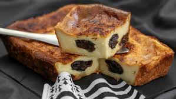

Ingrédients
- 500 g de lait entier
- 120 g de farine T55 ou fécule de maïs
- 85 g de sucre semoule
- 4 œufs
- 300 g de pruneaux
- 40 g de beurre
- 25 g de rhum
- 0.4 g de sel

Préparation
- Préchauffez votre four à 180°C.
- Dans un saladier, mélangez la farine, le sucre et le sel.
- Ajoutez les œufs un par un en mélangeant bien.
- Incorporez le lait petit à petit pour éviter les grumeaux.
- Ajoutez le rhum et l'extrait de vanille si souhaité.
- Beurrez un plat et disposez les pruneaux au fond.
- Versez la pâte sur les pruneaux.
- Enfournez pendant environ 45 minutes jusqu'à ce que le far soit doré.